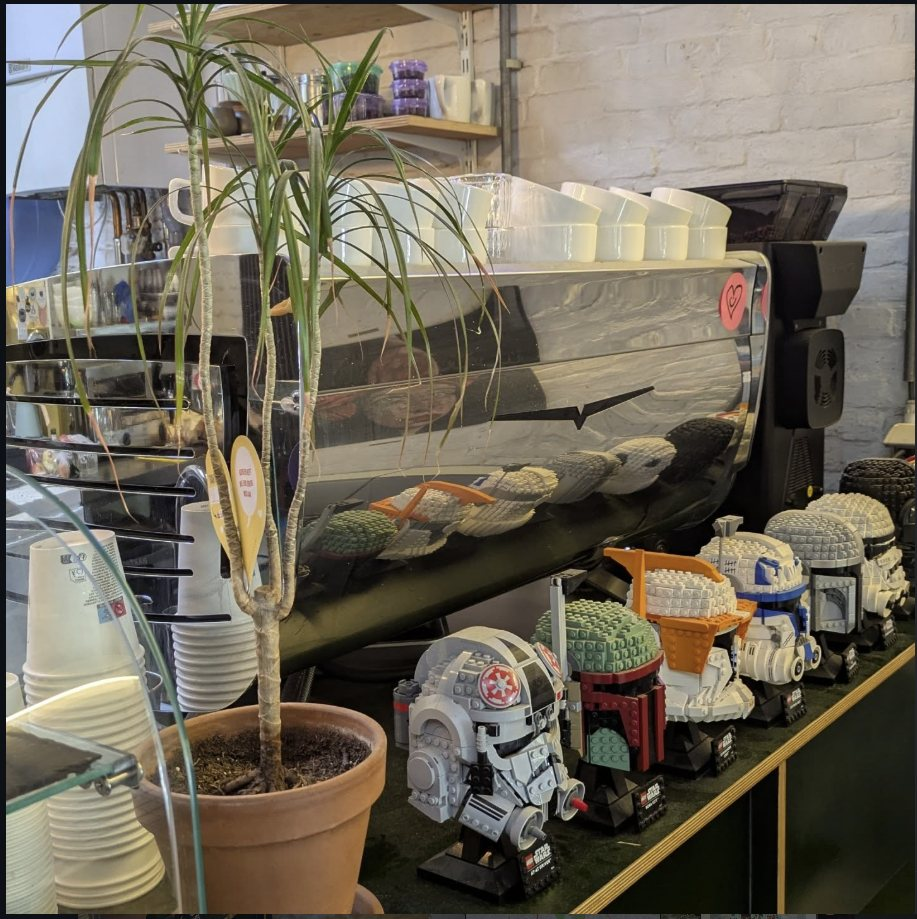
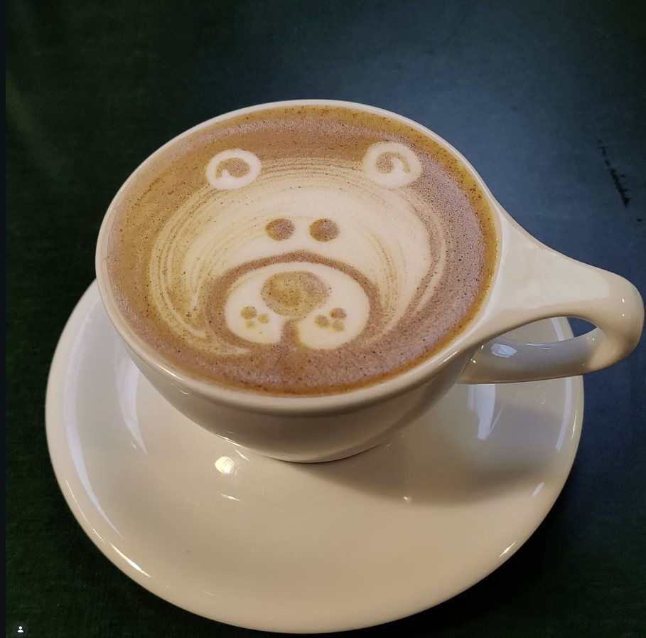

How to brew a better pour-over at home
You don't need a fancy kettle. You need fresh beans, a scale and about four minutes. Our head barista walks through the recipe we use behind the bar, and the three mistakes she sees most often.

Brewing guides, farm visits and whatever we're drinking this month.
You don't need a fancy kettle. You need fresh beans, a scale and about four minutes. Our head barista walks through the recipe we use behind the bar, and the three mistakes she sees most often.

The story behind the helmets lined up next to our espresso machine.

Twelve samples, a lot of slurping, and one bag that made the cut.

Start with a heart, work up to a bear. The trick is in the milk, not the wrist.

No honey involved. Here's how drying the fruit on the bean changes the cup.

They're not the same drink. One takes 18 hours, the other takes two minutes.

A single shot is hard to get right. A double tastes better and costs you nothing extra.